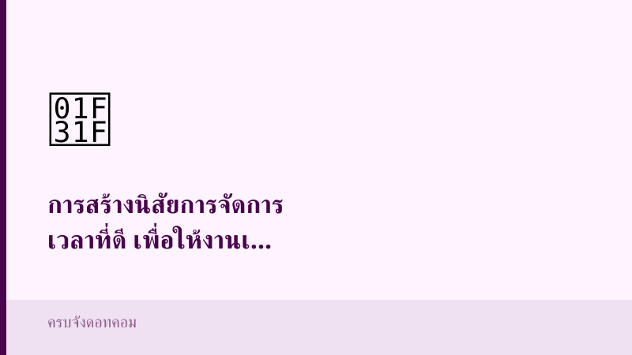

ไลฟ์สไตล์
รวมบทความหมวดไลฟ์สไตล์ อัปเดตใหม่ทุกวัน
บทความล่าสุด (27 บทความ)

การสร้างนิสัยการจัดการเวลาที่ดี เพื่อให้งานเสร็จเร็วขึ้นและลดความเครียด

วิธีการแบ่งงานให้มีประสิทธิภาพ เพื่อทำให้การทำงานเสร็จเร็วขึ้นเป็นสองเท่า

การใช้เทคโนโลยีช่วยในการจัดการเวลาและเพิ่มความรวดเร็วในการทำงาน

เทคนิคการจัดลำดับความสำคัญของงาน เพื่อให้งานเสร็จสมบูรณ์ภายในเวลาที่กำหนด

การจัดการเวลา: วิธีเพิ่มประสิทธิภาพในการทำงานให้เสร็จเร็วขึ้น

การเปรียบเทียบอาหารไทยกับอาหารจากประเทศอื่น: ทำไมอาหารไทยถึงอร่อยและแตกต่าง

ประโยชน์ของการทำอาหารไทยที่บ้าน: สุขภาพดีด้วยการทำอาหารไทยเอง

ประเภทของอาหารไทย: อาหารไทยที่ควรลองทำที่บ้าน

วิธีทำอาหารไทย: เทคนิคและเคล็ดลับในการปรุงอาหารไทยที่บ้าน

ประวัติความเป็นมาของอาหารไทย: การทำอาหารไทยอร่อยๆ ที่บ้าน

ประเภทของสูตรทำความสะอาดบ้านด้วยของที่มีในครัวที่คุณสามารถลองได้ที่บ้าน

ประโยชน์ของการใช้ส่วนผสมจากครัวในการทำความสะอาดบ้าน

การเปรียบเทียบวิธีการทำความสะอาดบ้านแบบต่างๆ ด้วยของที่มีในครัว

วิธีการทำความสะอาดบ้านด้วยส่วนผสมจากครัวอย่างง่ายและรวดเร็ว

ประวัติความเป็นมาของการทำความสะอาดบ้านด้วยของที่มีในครัว

เทคนิคจัดการเวลาให้งานเสร็จเร็วขึ้นเป็นสองเท่า — การประเมินผลและการปรับปรุงกระบวนการจัดการเวลา

เทคนิคจัดการเวลาให้งานเสร็จเร็วขึ้นเป็นสองเท่า — การลดความยุ่งเหยิงและสิ่งรบกวนในพื้นที่ทำงาน

เทคนิคจัดการเวลาให้งานเสร็จเร็วขึ้นเป็นสองเท่า — การสร้างนิสัยและวินัยในการทำงาน

เทคนิคจัดการเวลาให้งานเสร็จเร็วขึ้นเป็นสองเท่า — การใช้เทคโนโลยีเพื่อช่วยในการจัดการเวลา